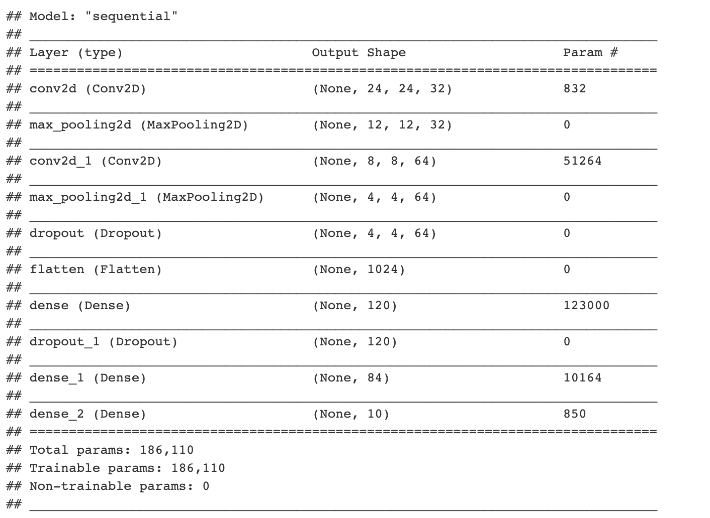

12.2 Convolutional Neural Network
There are some challenges using a feedforward neural network to solve computer vision problems. One of the challenges is that the inputs can get really big after you vectorize the image array. A 64 x 64 x 3 image gives you an input vector of 12288! And that is a very small image. So you can expect the number of parameters grows fast and it is difficult to get enough data to fit the model. Also as the input image size grows, the computational requirements to train a feedforward neural network will soon become infeasible. Also, after vectorization, you lose most of the spacial information of the image. To overcome these, people instead use the convolutional neural network for computer vision problems.
This section introduces the Convolutional Neural Network (CNN), the deep learning model that is almost universally used in computer vision applications. Computer vision has been advancing rapidly which enables many new applications such as self-driving cars and unlocking a phone using face. The application is not limited to the tech industry but some traditional industries such as agriculture and healthcare. Precision agriculture utilizes advanced hardware and computer vision algorithms to increase efficiency and reduce costs for farmers. For example, analyze images from cameras in the greenhouse to track plant growth state. Use sensory data from drones, satellites, and tractors to track soil conditions, detect herbs and pests, automate irrigation, etc. In health care, computer vision helps clinicians to diagnose disease, identify cancer sites with high accuracy (Kwak and Hui 2019). Even if you don’t work on computer vision, you may find some of the ideas inspiring and borrow them into your area.
Some popular computer vision problems are:
- Image classification (or image recognition): Recognize the object in the image. Is there a cat in the image? Who is this person?
- Object detection: Detect the position and boarder of a specific object. For example, if you are building a self-driving car, you need to know the positions of other cars around you.
- Neural Style Transfer (NST): Given a “content” image and a “style” image, generate an image that merges the two.
12.2.1 Convolution Layer
A fundamental building block of the convolution neural network is, as the name indicates, the convolution operation. In this chapter, we illustrate the fundamentals of CNN using the example of image classification.
How do you do convolution? For example, you have a 5 x 5 2-d image (figure 12.11. You apply a 3 x 3 filter and convolute over the image. The output of this convolution operator will be a 3 x 3 matrix, which you can consider as a 3 x 3 image and visualize it (top right of figure 12.11).

FIGURE 12.11: There are an input image (left), a filter (middel), and an output image (right).
You start from the top left corner of the image and put the filter on the top left 3 x3 sub-matrix of the input image and take the element-wise product. Then you add up the 9 numbers. Move forward one step each time until it gets to the bottom right. The detailed process is shown in figure 12.12.

FIGURE 12.12: Convolution step by step
Let’s use edge detection as an example to see how convolution operation works. Given a picture as the left of figure 12.13, you want to detect the vertical lines. For example, there are vertical lines along with the hair and the edges of the bookcase. How do you do that? There are standard filters for operations like blurring, sharpening, and edge detection. To get the edge, you can use the following 3 x 3 filter to convolute over the image.
kernel_vertical = matrix(c(1, 1, 1, 0, 0, 0, -1, -1, -1),
nrow = 3, ncol = 3)
kernel_vertical## [,1] [,2] [,3]
## [1,] 1 0 -1
## [2,] 1 0 -1
## [3,] 1 0 -1The following code implements the convolution process. The result is shown as the middle of figure 12.13.
image = magick::image_read("http://bit.ly/2Nh5ANX")
kernel_vertical = matrix(c(1, 1, 1, 0, 0, 0, -1, -1, -1),
nrow = 3, ncol = 3)
kernel_horizontal = matrix(c(1, 1, 1, 0, 0, 0, -1, -1, -1),
nrow = 3, ncol = 3, byrow = T)
image_edge_vertical = magick::image_convolve(image, kernel_vertical)
image_edge_horizontal = magick::image_convolve(image, kernel_horizontal)
par(mfrow = c(1, 3))
plot(image)
plot(image_edge_vertical)
plot(image_edge_horizontal)
FIGURE 12.13: Edge Detection Example
Why can kernel_vertical detect vertical edge? Let’s look at a simpler example. The following 8 x 8 matrix where half of the matrix is 10 and the other half is 0. The corresponding image is shown as the left of the figure 12.14.
input_image = matrix(rep(c(200, 200, 200, 200, 0, 0, 0, 0), 8),
nrow = 8, byrow = T)
input_image## [,1] [,2] [,3] [,4] [,5] [,6] [,7] [,8]
## [1,] 200 200 200 200 0 0 0 0
## [2,] 200 200 200 200 0 0 0 0
## [3,] 200 200 200 200 0 0 0 0
## [4,] 200 200 200 200 0 0 0 0
## [5,] 200 200 200 200 0 0 0 0
## [6,] 200 200 200 200 0 0 0 0
## [7,] 200 200 200 200 0 0 0 0
## [8,] 200 200 200 200 0 0 0 0If we use the above filter kernel_vertical , the output matrix is shown below and the corresponding image is shown as the right of the figure 12.14.
output_image = matrix(rep(c(0, 0, 200, 200, 0, 0), 6),
nrow = 6, byrow = T)
output_image## [,1] [,2] [,3] [,4] [,5] [,6]
## [1,] 0 0 200 200 0 0
## [2,] 0 0 200 200 0 0
## [3,] 0 0 200 200 0 0
## [4,] 0 0 200 200 0 0
## [5,] 0 0 200 200 0 0
## [6,] 0 0 200 200 0 0
FIGURE 12.14: Simple Edge Detection Example
So the output image has a lighter region in the middle that corresponds to the vertical edge of the input image. When the input image is large, such as the image in figure 12.13 is 1020 x 711, the edge will not seem as thick as it is in this small example. To detect the horizontal edge, you only need to rotate the filter by 90 degrees. The right image in figure 12.13 shows the horizontal edge detection result. You can see how convolution operator detects a specific feature from the image.
The parameters for the convolution operation are the elements in the filter. For a 3x3 filter shown below, the parameters to estimate are \(w_1\) to \(w_9\). So far, we move the filter one step each time when we convolve. You can do more than 1 step as well. For example, you can hop 2 steps each time after the sum of the element-wise product. It is called strided-convolution. Use stride \(s\) means the output is downsized by a factor of \(s\). It is rarely used in practice but it is good to be familiar with the concept.

FIGURE 12.15: Convolution Layer Parameters
12.2.2 Padding Layer
Assume the stride is \(s\) and we have a \(n \times n\) input image to convolve with a \(f \times f\) filter, the output image is \((\frac{n-f}{s} + 1) \times (\frac{n-f}{s} + 1)\). After each convolution, the dimension of the output shrinks. Depending on the size of the input image, the output size may get too small after a few rounds. Also, the pixel at the corner is used less than the pixel in the middle. So it overlooks some information in the image. To overcome these problems, you can add a padding layer during the process. To keep the output the same size as the input image in figure 12.15, you can pad two pixels on each side of the image with 0 (figure 12.16 ).

FIGURE 12.16: Padding Layer
If the stride is \(s\) and we have a \(n \times n\) input image to convolve with a \(f \times f\) filter. This time we pad \(p\) pixels in each side, then the output size becomes \((\frac{n + 2p -f}{s} + 1) \times (\frac{n + 2p -f}{s} + 1)\). You can specify the value for p and also the pixel value used. Or you can just use 0 to pad and make the output the same size with input.
12.2.3 Pooling Layer
People sometimes use the pooling layer to reduce the size of the representation and make some of the feature detection more robust. If you have a \(4 \times 4\) input, the max and mean pooling operation are shown in the figure 12.17. The process is quite simple. In the example, the filter is \(2 \times 2\) and stride is 2, so break the input into four \(2 \times 2\) regions (shown in the figure with different shaded colors). For max pooling, each of the outputs is the maximum from the corresponding shaded sub-region. Mean pooling layer works in the same way except for getting the mean instead of maximum of the sub-region. The pooling layer has hyperparameters (\(f\) and \(s\)) but it has no parameter for gradient descent to learn.

FIGURE 12.17: Pooling Layer
Let’s go through an example of pooling a 2D grayscale image. Hope it gives you some intuition behind what it does. Read the image and convert the original color image (a 3D array) to grayscale (a 2D matrix).
library(EBImage)
library(dplyr)
eggshell <- readImage("https://scientistcafe.com/images/eggshell.jpeg") %>%
# make it smaller
resize(560, 420) %>%
# rotate image
rotate(90)
# convert to 2D grayscale
gray_eggshell = apply(eggshell, c(1,2), mean)The following function takes an image matrix or array, and apply pooling operation.
pooling <- function(type = "max", image, filter, stride) {
f <- filter
s <- stride
if (length(dim(image)) == 3) {
# get image dimensions
col <- dim(image[, , 1])[2]
row <- dim(image[, , 1])[1]
# calculate new dimension size
c <- (col - f)/s + 1
r <- (row - f)/s + 1
# create new image object
newImage <- array(0, c(c, r, 3))
# loops in RGB layers
for (rgb in 1:3) {
m <- image[, , rgb]
m3 <- matrix(0, ncol = c, nrow = r)
i <- 1
if (type == "mean")
for (ii in 1:r) {
j <- 1
for (jj in 1:c) {
m3[ii, jj] <- mean(as.numeric(m[i:(i +
(f - 1)), j:(j + (f - 1))]))
j <- j + s
}
i <- i + s
} else for (ii in 1:r) {
j = 1
for (jj in 1:c) {
m3[ii, jj] <- max(as.numeric(m[i:(i +
(f - 1)), j:(j + (f - 1))]))
j <- j + s
}
i <- i + s
}
newImage[, , rgb] <- m3
}
} else if (length(dim(image)) == 2) {
# get image dimensions
col <- dim(image)[2]
row <- dim(image)[1]
# calculate new dimension size
c <- (col - f)/s + 1
r <- (row - f)/s + 1
m3 <- matrix(0, ncol = c, nrow = r)
i <- 1
if (type == "mean")
for (ii in 1:r) {
j <- 1
for (jj in 1:c) {
m3[ii, jj] <- mean(as.numeric(image[i:(i +
(f - 1)), j:(j + (f - 1))]))
j <- j + s
}
i <- i + s
} else for (ii in 1:r) {
j = 1
for (jj in 1:c) {
m3[ii, jj] <- max(as.numeric(image[i:(i +
(f - 1)), j:(j + (f - 1))]))
j <- j + s
}
i <- i + s
}
newImage <- m3
}
return(newImage)
}Let’s apply both max and mean pooling with filter size 10 (\(f = 10\)) and stride 10 (\(s = 10\)).
gray_eggshell_max = pooling(type = "max",
image = gray_eggshell,
filter = 10, stride = 10)
gray_eggshell_mean = pooling(type = "mean",
image = gray_eggshell,
filter = 10, stride = 10)You can see the result by plotting the output image (figure 12.18). The top left is the original color picture. The top right is the 2D grayscale picture. The bottom left is the result of max pooling. The bottom right is the result of mean pooling. The max-pooling gives you the value of the largest pixel and the mean-pooling gives the average of the patch. You can consider it as a representation of features, looking at the maximal or average presence of different features. In general, max-pooling works better. You can gain some intuition from the example (figure 12.18). The max-pooling “picks” more distinct features and average-pooling blurs out features evenly.
par(mfrow = c(2,2), oma = c(1, 1, 1, 1))
plot(eggshell)
plot(as.Image(gray_eggshell))
plot(as.Image(gray_eggshell_max))
plot(as.Image(gray_eggshell_mean))
FIGURE 12.18: Example of max and mean pooling
12.2.4 Convolution Over Volume
So far, we have shown different types of layers on 2D inputs. If you have a 3D input (such as a color image), then the filters will have 3 channels too. For example, if you have a \(6 \times 6\) color image, the input dimension is \(6 \times 6 \times 3\). We call them the height, width, and the number of channels. The filter itself has 3 channels corresponding to the red, green, and blue channels of the input. You can consider it as a 3D cube with 27 parameters. Apply each channel of the filter to the corresponding channel of the input. Multiply each of the 27 numbers with the corresponding numbers from the top left region of the color input image and add them up. Add a bias parameter and apply an activation function which gives you the first number of the output image. Then slide it over to calculate the next one. The final output is 2D \(4 \times 4\). If you want to detect features in the red channel only, you can use a filter with the second and third channels to be all 0s. With different choices of the parameters, you can get different feature detectors. You can use more than one filter and each filter has multiple channels. For example, you can use one \(3 \times 3 \times 3\) filter to detect the horizontal edge and another to detect the vertical edge. Figure 12.18 shows an example of one layer with two filters. Each filter has a dimension of \(3 \times 3 \times 3\). The output dimension is \(4 \times 4 \times 2\). The output has two channels because we have two filters on the layer. The total number of parameters is 58 (each filter has one bias parameter \(b\)).

FIGURE 12.19: Example of convolution over volume
We use the following notations for layer \(l\):
- Use \(n_W^{[l]}\), \(n_H^{[l]}\) and \(n_C^{[l]}\) to denote the width, height and number of channels of the input
- \(f^{[l]}\) is the filter size
- \(p^{[l]}\) is the padding size
- \(s^{[l]}\) is the stride
The number of filters for layer \(l\) is the number of channels of the output of layer \(l\). Since the output of layer \(l\) is the input of layer \(l+1\), the number of filters for layer \(l\) is \(n_C^{[l+1]}\). The number of channels of the filter of layer \(l\) should be equal to the number of channels of the input of layer \(l\) which is the output of layer \(l-1\) (i.e. \(n_C^{[l-1]}\)). So the dimensions of some key elements of layer \(l\) are:
- Each filter: \(f^{[l]} \times f^{[l]} \times n^{[l-1]}_C\)
- Activations: \(a^{[l]} \rightarrow n_H^{[l]} \times n_W^{[l]} \times n_C^{[l]}\)
- Weights: \(f^{[l]} \times f^{[l]} \times n^{[l-1]}_C \times n^{[l]}_C\)
- bias: \(b^{[l]}_C\)
- Input: \(n^{[l-1]}_H \times n^{[l-1]}_W \times n^{[l-1]}_C\)
- Output: \(n^{[l]}_H \times n^{[l]}_W \times n^{[l]}_C\)
After a series of 3D convolutional layers, we need to ‘flatten’ the 3D tensor to a 1D tensor, and add one or several dense layers to connect the output to the response variable.
Now you know the basic building blocks of CNN. Let’s look at how to use the keras R package to solve the same handwritten digits image recognition problem as in section 12.1.7. You will see the CNN is better at handling image recognition problem.
12.2.5 Image Recognition Using CNN
CNN leverages the relationship among neighbor pixels in the 2D image for better performance. It also avoids generating thousands or millions of features for high resolution images with full color. Now let’s import the MNIST dataset again as we have done some preprocessing specifically for FFNN before. CNN requires different preprocessing steps. Let’s start with a few parameters to be used later.
# Load the mnist data's training and testing dataset
mnist <- dataset_mnist()
x_train <- mnist$train$x
y_train <- mnist$train$y
x_test <- mnist$test$x
y_test <- mnist$test$y
# Define a few parameters to be used in the CNN model
batch_size <- 128
num_classes <- 10
epochs <- 10
# Input image dimensions
img_rows <- 28
img_cols <- 2812.2.5.1 Data preprocessing
For CNN, the input is a \(n_H \times n_W \times n_C\) 3D array with \(n_C\) channels. For example, a greyscale \(n_H \times n_W\) image has only one channel, and the input is \(n_H \times n_W \times 1\) tensor. A \(n_H \times n_W\) 8-bit per channel RGB image has three channels with 3 \(n_H \times n_W\) array with values between 0 and 255, so the input is \(n_H \times n_W \times 3\) tensor. For the problem that we have now, the image is greyscaled, but we need to specifically define there is one channel by reshaping the 2D array into 3D tensor using array_reshape(). The input_shape variable will be used in the CNN model later. For an RGB color image, the number of channels is 3 and we need to replace “1” with “3” for the code cell below if the input image is RGB format.
x_train <- array_reshape(x_train,
c(nrow(x_train), img_rows, img_cols, 1))
x_test <- array_reshape(x_test,
c(nrow(x_test), img_rows, img_cols, 1))
input_shape <- c(img_rows, img_cols, 1)Here is the structure of the reshaped image, the first dimension is the image index, the 2-4 dimension is a 3D tensor even though there is only one channel.
str(x_train)int [1:60000, 1:28, 1:28, 1] 0 0 0 0 0 0 0 0 0 0 ...Same as the FFNN model, we scale the input values to be between 0 and 1 for the same numerical stability consideration in the optimization process.
x_train <- x_train / 255
x_test <- x_test / 255Encode the response variable to binary vectors.
# Convert class vectors to binary class matrices
y_train <- to_categorical(y_train, num_classes)
y_test <- to_categorical(y_test, num_classes)12.2.5.2 Fit model
CNN model contains a series of 3D convolutional layers which contains a few parameters:
the kernal_size which is typically 3x3 or 5x5;
the number of filters, which is equal to the number of channels of the output;
activation function.
For the first layer, there is also an input_shape parameter which is the input image size and channel. To prevent overfitting and speed up computation, a pooling layer is usually applied after one or a few convolutional layers. A maximum pooling layer with pool_size = 2x2 reduces the size to half. Dropout can be used as well in addition to pooling neighbor values. After a few 3D convolutional layers, we also need to ‘flatten’ the 3D tensor output into 1D tensor, and then add one or a couple of dense layers to connect the output to the target response classes.
Let’s define the CNN model structure. Now we define a CNN model with two convolutional layers, two max-pooling layers, and two dropout layers to mediate overfitting. There are three dense layers after flattening the 3D tensor. The last layer is a dense layer that connects to the response.
# define model structure
cnn_model <- keras_model_sequential() %>%
layer_conv_2d(filters = 32,
kernel_size = c(5,5),
activation = 'relu',
input_shape = input_shape) %>%
layer_max_pooling_2d(pool_size = c(2, 2)) %>%
layer_conv_2d(filters = 64,
kernel_size = c(5,5),
activation = 'relu') %>%
layer_max_pooling_2d(pool_size = c(2, 2)) %>%
layer_dropout(rate = 0.2) %>%
layer_flatten() %>%
layer_dense(units = 120, activation = 'relu') %>%
layer_dropout(rate = 0.5) %>%
layer_dense(units = 84, activation = 'relu') %>%
layer_dense(units = num_classes, activation = 'softmax')summary(cnn_model)
Similar to before, we need to compile the defined CNN model.
cnn_model %>% compile(
loss = loss_categorical_crossentropy,
optimizer = optimizer_adadelta(),
metrics = c('accuracy')
)We then train the model and save each epochs’s history using fit() function. Please note, as we are not using GPU, it takes a few minutes to finish. Please be patient while waiting for the results. The training time can be significantly reduced if running on GPU.
cnn_history <- cnn_model %>% fit(
x_train, y_train,
batch_size = batch_size,
epochs = epochs,
validation_split = 0.2
)The trained model accuracy can be evaluated on the testing dataset which is pretty good.
cnn_model %>% evaluate(x_test, y_test)## loss accuracy
## 0.02301287 0.99300003There is some useful information stored in the output object cnn_history and the details can be shown by using str(). We can plot the training and validation accuracy and loss as function of epoch by simply calling plot(cnn_history).
str(cnn_history)## List of 2
## $ params :List of 3
## ..$ verbose: int 1
## ..$ epochs : int 10
## ..$ steps : int 375
## $ metrics:List of 4
## ..$ loss : num [1:10] 0.3415 0.0911 0.0648 0.0504 0.0428 ...
## ..$ accuracy : num [1:10] 0.891 0.973 0.981 0.985 0.987 ...
## ..$ val_loss : num [1:10] 0.071 0.0515 0.0417 0.0377 0.0412 ...
## ..$ val_accuracy: num [1:10] 0.978 0.985 0.988 0.99 0.988 ...
## - attr(*, "class")= chr "keras_training_history"plot(cnn_history)12.2.5.3 Prediction
We can apply the trained model to predict new image.
# model prediction
cnn_pred <- cnn_model %>%
predict(x_test) %>%
k_argmax()
head(cnn_pred)## tf.Tensor([7 2 1 0 4 1], shape=(6,), dtype=int64)Now let’s check a few misclassified images to see whether a human can do a better job than this simple CNN model.
## Convert tf.tensor to array
cnn_pred <- as.array(cnn_pred)
## number of mis-classcified images
sum(cnn_pred != mnist$test$y)## [1] 70missed_image = mnist$test$x[cnn_pred != mnist$test$y,,]
missed_digit = mnist$test$y[cnn_pred != mnist$test$y]
missed_pred = cnn_pred[cnn_pred != mnist$test$y]index_image = 10 ## change this index to see different image.
input_matrix <- missed_image[index_image,1:28,1:28]
output_matrix <- apply(input_matrix, 2, rev)
output_matrix <- t(output_matrix)
image(1:28, 1:28, output_matrix, col=gray.colors(256),
xlab=paste('Image for digit ', missed_digit[index_image], ',
wrongly predicted as ', missed_pred[index_image]), ylab="")